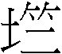

26 大畜卦 山天大畜
大畜，利貞，不家食吉，利涉大川。初九，有厲，利已。九二，輿說輹。九三，良馬逐，利艱貞。曰閑輿衛，利有攸往。六四，童牛之牿，元吉。六五，豶豕之牙，吉。上九，何天之衢，亨。
【卦名】
今本：大畜 帛書：泰蓄 歸藏：大毒畜 上博簡：大 清華簡：大䈞 海昏：大畜
大畜、大蓄
畜的本義為家畜、畜養、豢養。引申為儲蓄、積聚。
《說文》：「田畜也。《淮南子》曰：玄田爲畜。」畜甲骨文作，上方為玄（即糸，繫的意思），下方為，象有草木的一塊田地，或園林。徐中舒《甲骨文字典》：「田獵所得而拘系之，斯為家畜，此為玄田之正解。」。
因此大畜最原始的意思可理解為大家畜，或大量的畜養，小畜則為小家畜或小量的畜養。這也可說明為何大畜爻辭中有「良馬逐」、「童牛之牯」、「豶豕之牙」，談的都是大型家畜之事。
畜又可從畜養引申為治理、羅致之義。香港中文大學漢語多功能字庫：「金文表示畜養，引申為羅致、治理人才，秦公鎛：『咸畜百辟胤士』，意謂羅致百官賢士。」《詩經‧節南山》：「以畜萬邦。」《莊子》〈天道篇〉：「天樂者，聖人之心，以畜天下也。」〈天下篇〉：「古之畜天下者，无欲而天下足。」
畜也是蓄的本字，積聚、儲蓄的意思。帛書作泰蓄，泰同大，蓄即畜。因此大畜也可指積蓄、儲蓄很大，那麼所能夠做的事當然也就很大。《象傳》：「大畜。君子以多識前言往行，以畜其德。」《彖傳》：「不家食吉，養賢也。」指人的資源、能量、錢財、德性…都有很大的積聚，因此可以做大事。
畜也通孝，有馴服、順從的意思。《禮記‧祭統》：「孝者，畜也，順於道，不逆於倫，是之謂畜。」
大篤、大竺、大毒
馬國翰輯本歸藏「大畜」作「大毒畜」，「小畜」作「小毒畜」，推測「畜」字為後人注解「大毒」和「小毒」的毒為畜。《說文》：「毒，厚也。害人之艸，往往而生。」毒通篤，篤厚的意思。于省吾認為，毒即厚：「小毒畜即小厚積，大毒畜即大厚積也。」
上博簡作「大」，為「竺」的繁化，通竺。清華簡作大䈞，䈞為篤或竺的古字，同樣是篤厚的意思。
從這些出土資料及古典可歸納出，大畜古為「大篤」或「大竺」，小畜作「小篤」或「小竺」。《彖傳》曰：「大畜，剛健篤實。」可能是古卦名大篤（竺）的遺痕。
篤，厚實、穩固也。篤原意為馬行遲頓，但後來用以替代竺字。竺為厚實之義，篤字現今也多做厚實解。段玉裁：「古假借篤爲竺字，以皆竹聲也。二部曰：竺，厚也。篤行而竺廢矣。《釋詁》曰：篤，固也。又曰：篤，厚也。《毛詩》椒聊、大明、公劉傳皆曰：篤，厚也。凡經傳，篤字固厚二訓足包之。《釋詁》篤竺並列，皆訓厚。《釋名》曰：篤，築也。築，堅實稱也。厚，後也，有終後也。蓋篤字之代竺久矣。」
大篤即非常篤實、厚實，基礎很穩固，《彖傳》講的「剛健篤實」。而小篤或少篤則是不夠篤實，不踏實，不夠穩固之義。此亦與「小畜」、「小蓄」之義互為表裡，畜養小者基礎就不夠厚實。
【卦義】
大家畜，大儲蓄，非常篤實。大養，所養之大。
大畜卦象下乾天，上艮止。艮為門闕，乾為剛健君子，此為君子養於門下之象。因此卦辭說「不家食」，《彖傳》說「不家食吉，養賢也」。又陽為大，大畜即「陽畜」，乾陽在內即有積聚之象，又有艮山在外養之，為乾陽之大養，大積聚，因此名為大畜。
《序卦》說：「復則不妄矣，故受之以无妄。有无妄然後可畜，故受之以大畜。」大畜與無妄為相綜的對卦，是繼剝、復而來。復卦為改過遷善，以至於無妄之後，開始大有可畜。不過虞翻認為：「《序卦》曰：復則不妄矣，故受之以无妄。而京氏及俗儒，以爲大旱之卦，萬物皆死，无所復妄，失之遠矣。有无妄然後可畜，不死明矣。若物皆死，將何畜聚，以此疑也。」依虞翻意思，復卦為生機藏地下，無妄為無亡，不死的意思。因萬物不死，生機藏天下，所以才可以開始畜聚畜養萬物。
大畜卦若是問功名，為大吉之卦，處畜極而發之時，但很可能是「食祿於外」，可能因此而無法兼顧家庭。若問婚姻，可能因事業忙碌而無法兼顧家庭。若問財運，則可有很大的積蓄，財運亨通。
大畜六爻由初到上，是畜極而發的一個歷程。初九，有厲利已，九二，輿說輹，同樣不可行。至九三，良馬逐，至上九，何天之衢，一飛登天。
大畜，利貞。不家食，吉，利涉大川。
彖曰：大畜，剛健篤實，輝光日新其德，剛上而尚賢，能止健，大正也。不家食吉，養賢也；利涉大川，應乎天也。
象曰：天在山中，大畜。君子以多識前言往行，以畜其德。
【今解】
大畜，利於貞定，不在家吃飯，吉。利於渡河涉險。
不家食是因為食碌於外，受到重用，事業忙碌，無暇在家吃飯。因此此卦有因事業而無法兼顧家庭的情況。
另一解釋，大畜為大量畜養家畜，利於貞定，不要在家中飼養，吉。利於渡河過去飼養。此可能講的是遊牧逐水草而居的生活。
大畜卦乃畜極而發之卦，宜於定而後發，貞吉之後乃宜於涉大川。貞吉為先定，涉大川為後發。
胡炳文：不家食，是賢者不畜於家而畜於朝。涉大川，又似有畜極而通之意。要之兩利字，一吉字，占辭自分為三，不必泥而一之也。
【字義】
不家食：不在家吃飯，食祿於外，在外打拼。《彖傳》說：「不家食吉，養賢也」。食或作飼，飼養的意思。不在家中飼養，畜牧之事業才可做大，因此名大畜。朱熹：「不家食，謂食祿於朝，不食於家也。」王弼：「有大畜之實，以之養賢，令賢者不家食，乃吉也。尚賢制健，大正應天，不憂險難，故利涉大川也。」
初九，有厲，利已。
象曰：有厲利已，不犯災也。
【今解】
有危險，宜停止。
《象傳》說「有厲利已，不犯災也」，有危險而宜於停止不前，因為不去做冒犯危險、可能引來災難的事。
大畜乃畜極而發之卦，初與二都只在初始階段，宜貞定而不發。
【字義】
有厲：有危險。厲，危險。
利已：有多種解釋。一是利益已經停止、結束。已，結束。二是宜於停止。「已」也可當作己，利己即利於「己」日，己為天干戊己庚辛的己。已或者為巳之誤，巳通祀，利巳，宜於祭祀。
九二，輿說輹。
象曰：輿說輹，中无尤也。
【今解】
用來固定車輪軸的革繩脫落。此意味無法前進，不宜出行。
大畜卦為畜極而發之卦，初與二為積畜之階段，至上九為何天之衢。
【字義】
輿說輹：輿，音「魚」，車子。說，音義都作「脫」，脫落的意思。輹，音「服」或「負」，用以固定車輪軸的革繩。小畜九三：「輿說輻，夫妻反目。」輻為輹之假借。用來固定車輪軸的革繩脫落，車子固障，當然不可行。《說文》：「輹，車軸縛也，从車复聲，《易》曰：輿脫輹。」段注：「謂以革若絲之類纏束於軸，以固軸也。縛者束也。」「《周易》小畜九三、大畜九二文也。馬云：車下縛也，與許合，其非轐明矣。或作腹者叚借字，或作輻者譌字。」依《說文》及段注，輹為皮革做成的繩子，用以繫緊及固定車輪軸。虞翻：「坤爲車，爲輻。至三成乾，坤象不見，故車說輻。馬君及俗儒皆以乾爲車，非也。」除大畜九二、小畜九三為輿脫輹之外，大壯九四「壯于大輿之輹」亦有脫輹之義，壯者傷也。
九三，良馬逐，利艱貞。曰閑輿衛，利有攸往。
- 象曰：利有攸往，上合志也。
- 昭力問曰：易又鄉大夫之義乎？子曰：師之左次，與闌輿之率（衛），與豶豕之牙，參者，大夫之所以治其國而安其［民也］。
- 帛書《昭力》：問闌輿之義。子曰：上正率國以德，次正率國以力，下正率國以兵。率國以德者，必和其君臣之節，不［以］耳之所聞敗目之所見，故權臣不作。同父子之欲，以固其親，賞百姓之勸，以禁諱教。察人所疾，不作苛心。是故大國屬力焉，而小國歸德焉。城郭弗脩，五兵弗底（實），而天下皆服焉。易曰：「闌輿之率，利有攸往。」若輿且可以闌然率之，㑆以德乎？可不共之有？（率或作衛）
【今解】
優良的駿馬飛奔有序，宜艱苦貞定。每天熟習駕馭大車的技術，利有所往。
此爻言有志氣的人才技藝精湛，能力高人一等，但仍然每天自我精進，提升自己的能力，因此利有所往。此爻亦可能講遊牧之事。九二輿脫輹，車子故障而不能前進或出行。現在車子修理好了，不但能夠重新再出發，而且良馬狂奔，很熟練的駕著車子趕路前往新的牧場。
「閑輿衛」《昭力》作「闌輿率」或「闌輿之率」，孔子並以「上正」（上政）詮釋「闌輿之率」，率應解釋為率領。孔子認為，上政以德來率領一國，次政以權力來率領一國，下政則是以兵力來率領一國。以德率國者必定能夠調和君臣之節，不會以耳目所聞來敗壞眼睛之所見，所以權臣不妄作。「若輿且可以闌然率之，況侃以德乎」，假設大輿都可以很閑熟地駕馭，更何況又以德來率領一國。
【字義】
良馬逐：駿馬飛奔。逐有兩種解釋，一是飛奔的樣子。二是馬相互追逐的樣子。所謂相互追逐，是指四馬的馬車，前後各兩匹，後馬追逐前馬，因此「良馬逐」可用以形容熟悉於駕馭，而把馬車控制得很好的樣子。《漢書‧五行志》引《京氏易傳》：「經曰良馬逐， 逐，進也，言大臣得賢者謀，當顯進其人，否則為下相攘善，茲謂盜明，厥咎亦不嗣，至於身僇家絕。」
曰閑輿衛：每日熟練馬車的駕馭、防衛之術。曰，有兩種解釋，一是當作發語辭，無意義；二是當作「日月」的「日」，言每天、每日。閑，閑熟，練習、熟練、精進。曰閑，作「日閑」則意思是日日練習，每日練習、精進。輿，古代的車，此指大車。衛，兩種解釋，一是防衛、防禦。二是車前的橫桿。「閑輿衛」帛書《昭力》張政烺校訂作「闌輿率」或「闌輿之率」，廖名春則作「閑輿衛」或「闌輿之衛」。
六四，童牛之牿，元吉。
象曰：六四元吉，有喜也。
【今解】
以童牛作告祭，大吉。
傳統解釋：小牛的牛牿，大吉。在小牛的牛角還未長出來之前，就先綁好牛牿，避免牛長大後會用角觸人。由於能防患於未然，吉，有喜。
此比喻做事情有先見之明，防患於未然則吉。
【字義】
童牛之牿：當作「童牛之告」。「牯」《九家易》作「告」，《說文》：「告，牛觸人，角箸橫木，所以告人也。从口从牛。《易》曰：僮牛之告。」依《說文》，童牛之告為小牛之觸人，小牛角上戴上橫木，因此而觸人。告，甲骨文通「祰」，為祰祭。童牛之告，以童牛作告祭。傳統解釋為小牛戴的牛牿。童牛，小牛。牿，當作告，又稱楅，套在牛角上的橫木，避免牛觸人傷人。牛從小就讓牠習慣於戴上牛牿，有防患於未然，防微杜漸的意味。侯果：「牿，楅也。以木爲之，橫施於角，止其觝之威也。」
六五，豶豕之牙，吉。
象曰：六五之吉，有慶也。
帛書《昭力》：又問：豶豕之牙，何胃也？子曰：古之仗強者也，仗強以侍難也。上正率兵而弗用，次正用兵而弗先也，下正銳兵而后威。幾兵而弗用者，調愛其百生而敬其士臣，強爭其時而讓其成利。文人為令，武夫用圖。脩兵不解，卒伍必固。權謀不讓，怨弗先昌。是故其士驕而不傾，其人調而不野。大國禮之，小國事之，危國獻焉，力國助焉，遠國依焉，近國固焉。上正陲衣常以來遠人，次正橐弓矢以伏天下。易曰：「豶豕之牙，吉。」夫豕之牙，成而不用者也。又芺而后見。言國脩兵不單而威之胃也。此大夫之用也，鄉大夫之事也。
【今解】
閹豬的牙，不會傷人，沒什麼好怕的，吉。
閹豬巨大，但空有其表，不足為懼，沒有危險性，故為吉。
【字義】
豶豕之牙：豶，音「焚」，《說文》：「豶，羠豕也，從豕賁聲。」豶豕之牙有兩種解釋。一是較為普遍者，豶豕為閹豬，就是被去勢的豬，可以長得比較大，性情也較為溫和，適於畜養，長大之後牙也不會傷人，所以豶豕之牙比喻有適當的預防措施所以不會有傷害。第二種解釋，豶為動辭，由去勢引申為去除。豶豕之牙，去除豬的獠牙。鄭玄：「牙讀為互。《釋文》引劉氏：「豕去勢曰豶。」《撮要》引褚氏：「豶，除也，除其牙也。」孔穎達引《爾雅》「墳大防」：「則豶是隄防之義。此豶其牙，謂防止其牙。」
上九，何天之衢，亨。
象曰：何天之衢，道大行也。
【今解】
走到康莊大道，亨通。
直接通達天衢。上九為畜極而發之時，積畜到極點，一飛沖天的時候。王弼：「處畜之極，畜極則通，大畜以至於大亨之時。」
【字義】
何天之衢：通天大道。何，三種解釋，一是當作語助辭，王弼：「何，辭也。猶云何畜，乃天之衢。」程頤認為「何」為衍字：「予聞之胡先生曰：天之衢亨誤加何字。」二是作「當」，走到…的意思。衢，大道。虞翻：「何，當也。衢，四交道。」三是荷，承擔之義。王宗傳：「何，如何校之何，《釋文》曰：梁武帝讀音賀是也。言以身任天下之責，當畜賢之時，為五所尚，主張賢路，賢者之得志，莫盛於斯也。」吳澄：「後漢王延壽魯靈光殿賦云，荷天衢以元亨，何作荷，何天之衢，其辭猶《詩》言何天之休，何天之龍。」甲骨文「何」字象人的肩上扛着鋤頭或扁擔之形，本義為擔荷、負荷，為「荷」的本字。因此以第三說最佳。
【彖傳注】
大畜，剛健篤實，輝光日新其德，剛上而尚賢，能止健，大正也。不家食吉，養賢也；利涉大川，應乎天也。
大畜剛健篤實輝光日新其德剛上而尚賢：有多種讀法。《孫氏周易集解》作：「大畜剛健，篤實輝光，日新其德，剛上而尚賢。」另可作：「大畜，剛健篤實，輝光日新，其德剛上而尚賢。」「大畜，剛健篤實，輝光日新其德，剛上而尚賢。」
剛健篤實：以上下二體解釋大畜卦義。下卦乾為剛健，上卦艮為篤實。
輝光日新其德：乾為大明，輝光之象。艮在外為養，大畜為畜養大明，故有輝光日新之義。劉邠問管輅：「易言剛健篤實，輝光日新，斯為同不也？」管輅曰：「不同之名，朝旦為輝，日中為光。」
剛上而尚賢：以卦變解釋卦義。大畜為大壯卦變而來，大壯九四上升到上位成大畜，並成止健之象（能止健）。上艮為止，下乾為健。也可能是需卦而來，需九五至上成為大畜上九，為剛上，爻辭說「何天之衢」。
不家食吉，養賢也：大畜為君子養於門下之象，養賢之義，因此不家食吉。
利涉大川，應乎天也：六五與九二相應，與上九比應。大畜可能是需卦而來，需者飲食之道，需九五至上成大畜，因此曰不家食吉。九五從坎中上行成大畜上九，為涉大川之象。反之，无妄卦為訟卦來，訟卦下卦坎中下行至初，為不利有攸往之象。